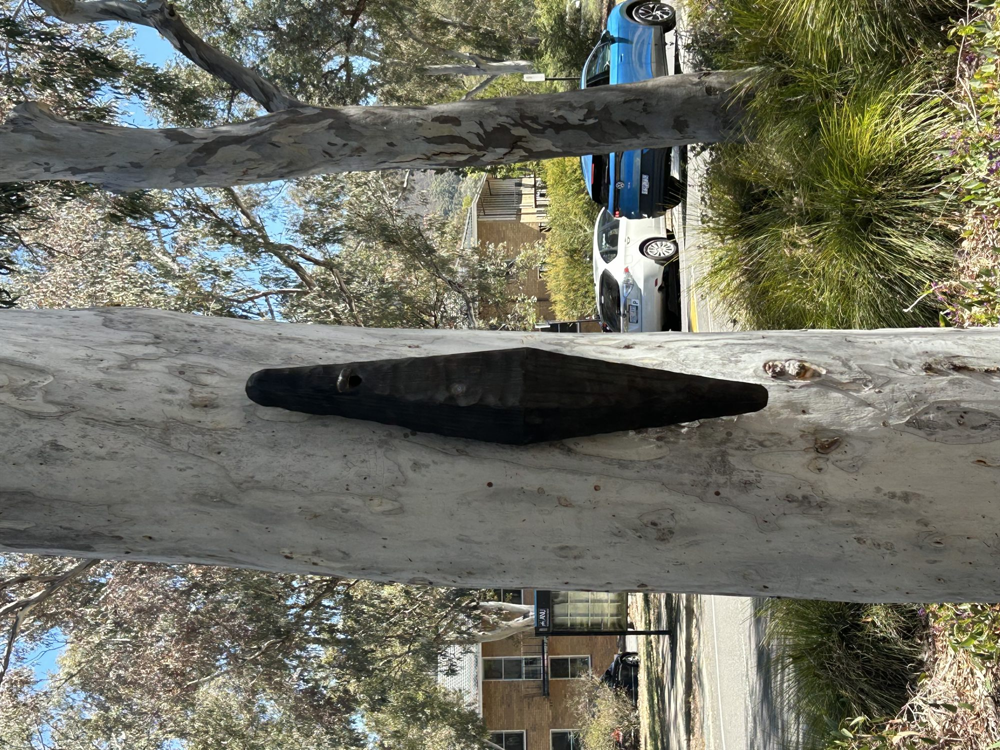
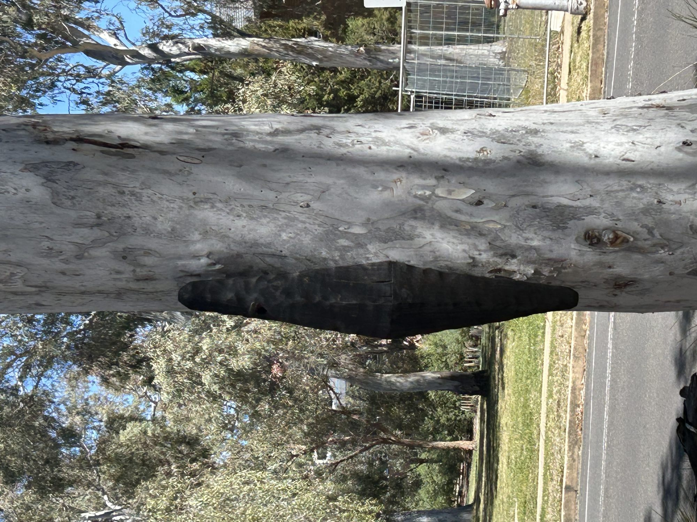
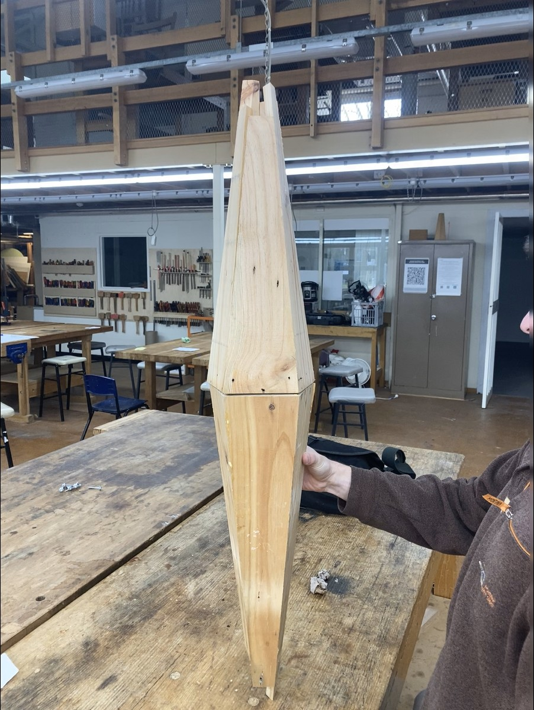
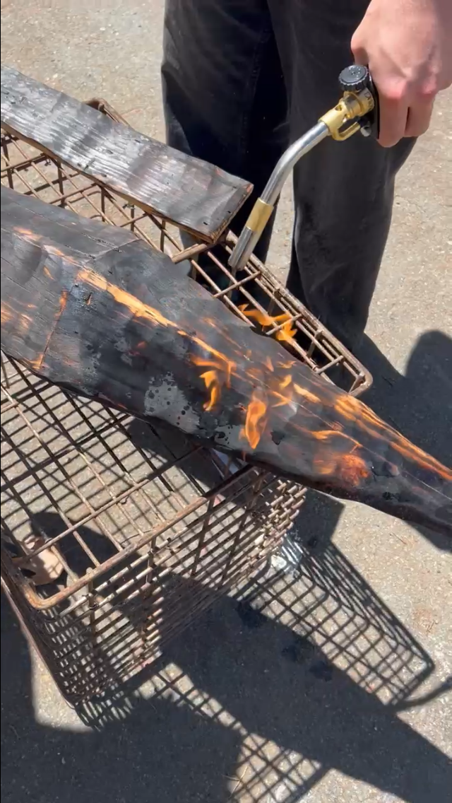
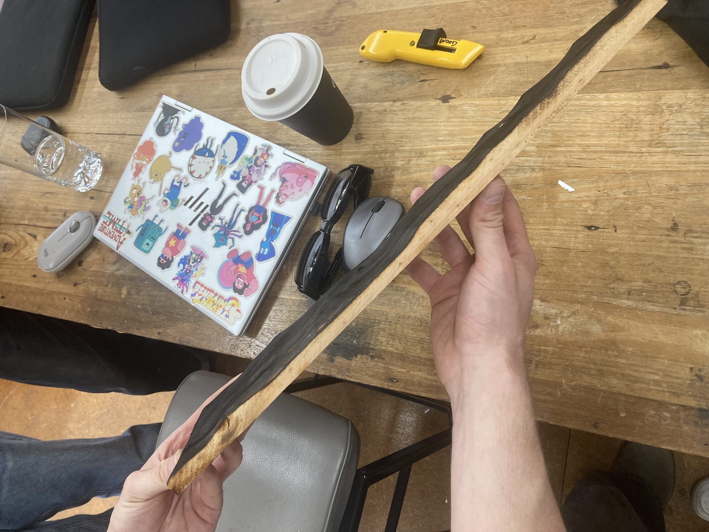

TIMBER / 04
Pygmy Possum Hollow Design
- WORK
- Habitecture / artificial nesting hollow prototype
- YEAR
- 2025
- MEDIUM
- Pine timber · PVA adhesive · Steel mounting hardware · Charred timber finish
- CONTEXT
- Group university project · ANU DESN2012

Overview
Pygmy Possum Hollow Design was a group habitecture project responding to the shortage of natural nesting spaces for Eastern Pygmy Possums. We developed a timber hollow that could be securely mounted to a tree while appearing more like a natural feature of the trunk than a conventional rectangular nest box.
My involvement was in the conceptual and physical development: shaping the idea, sourcing materials, prototyping, fabrication, assembly, finishing and installation. Other group members led much of the documentation and research.
Design Brief
Design an artificial hollow informed by the nesting requirements of Eastern Pygmy Possums, taking account of cavity and entry dimensions, secure mounting, outdoor durability and integration with a living tree.
The creative challenge was to satisfy practical, species-specific constraints while producing a distinctive sculptural form. The object needed to be functional and weather-conscious without looking like a generic wooden box.


Process
The group began by researching the pygmy possum’s sheltering behaviour and how the loss of mature trees can reduce the availability of natural hollows. Ideas explored how a timber structure might blend into the contours of a trunk while allowing the cavity and entry to be configured for a small animal.
We initially considered native timber but used pine for the prototype because it was practical to source and work. I participated in the hands-on stages: cutting and joining timber, shaping the exterior, refining grooves and the internal opening, and designing a flat mounting face with metal components for attachment to the tree.
The exterior received a charred finish using the Japanese surface-treatment method commonly called Shou Sugi Ban or Yakisugi. We explored this treatment for its visual relationship with tree bark and its potential weathering benefits. Balancing sculptural appearance, mounting strength and the animal’s size-specific requirements was the defining challenge.


Outcome
We installed the completed hollow on a tree at a group member’s property in a rural area near Canberra and left it in place. It combined a visibly handcrafted, organic timber form with an internal cavity, small entry and tree-mounting system.
Its installation demonstrated that the physical design and mounting method could be realised, but wildlife occupation and long-term performance were not verified as part of the documented project. It was valuable to work at the intersection of timber craft, habitat needs and sculptural making, where a good-looking object also has a responsibility to function in a real environment.